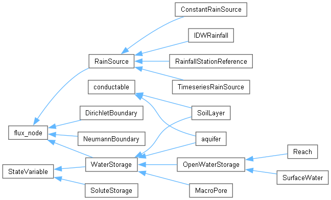
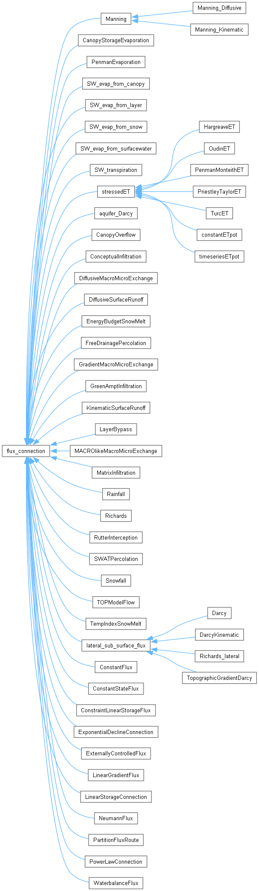
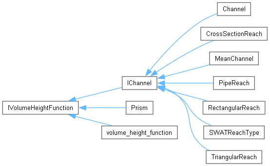

cmf
1.3
The Catchment Modelling Framework
Class Hierarchy
Go to the textual class hierarchy



© 2008-2017 by
Philipp Kraft
and
Institute of Landscape Ecology and Resources Management,University of Gießen
Generated: Wed Apr 18 2018 16:02:27